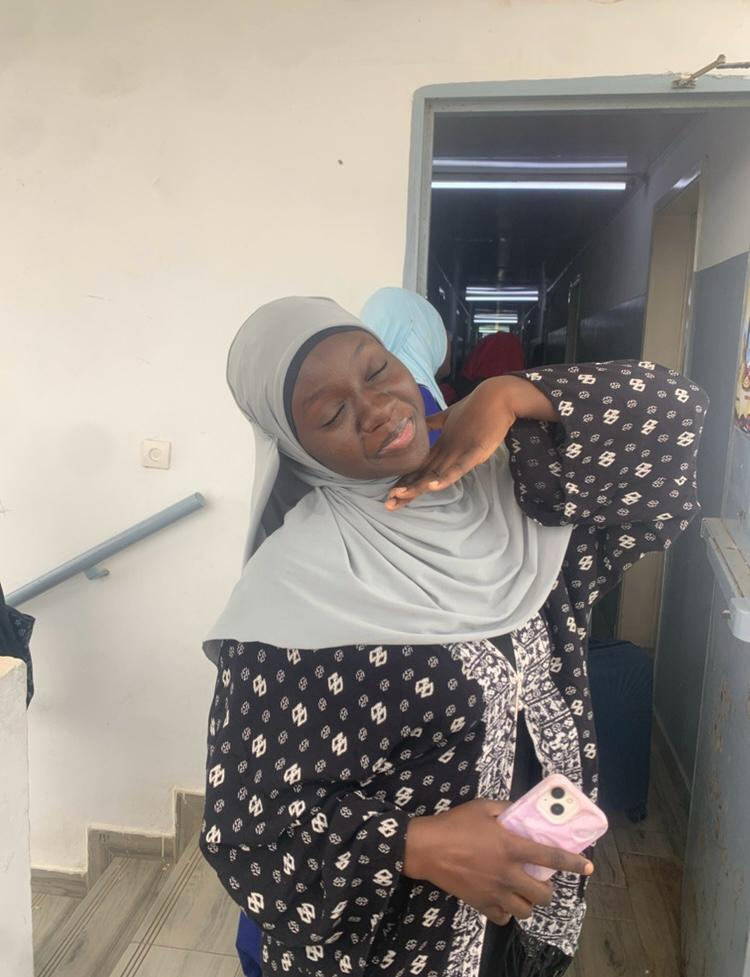

Etudiante en DUT informatique
+221771234567
Langage C
HTML - CSS
JavaScript
Scripting
Français - Natif
Anglais - C1
Espagnol - A2
Graphisme
Audiovisuel
Lecture
Étudiante en DUT Informatique, passionnée par le développement et les nouvelles technologies, je m’intéresse particulièrement au développement web et aux réseaux. Sérieuse, autonome, déterminée et en cours de développement de compétences à travers des projets concrets et des expériences professionnelles enrichissantes.
En cours
Ecole Supérieure Polytechnique
2025
Cous privé Anne Marie JavouheyProjets académiques:
CISCO - Introduction to cybersecurity(2025)
HUAWEI - Technologies des réseaux(2025)